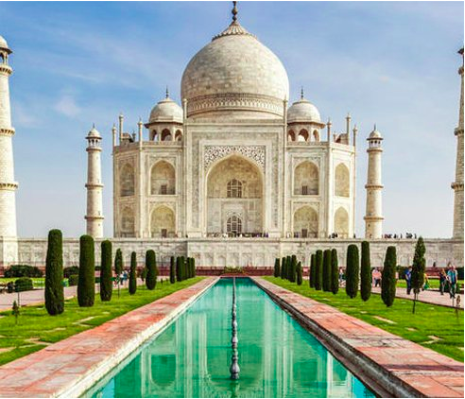
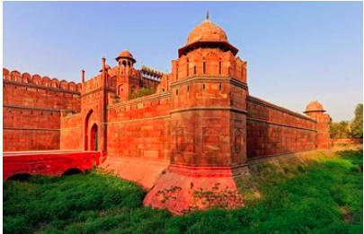

Heritage tourism is defined as “travel concerned with experiencing the
visual and performing arts, heritage buildings, areas, landscapes, and special
lifestyles, values, traditions and events” and includes “handicrafts, language,
gastronomy, art and music, architecture, sense of place, historic sites, festivals
and events, heritage resources, the nature of the work environment and
technology, religion, education, and dress.”Individuals tour for many reasons
and each seeks their own variety of fulfillment. To accommodate these needs,
museums, parks, historic sites, and cities present their heritage in ways that are
both educating and entertaining for people of all ages, classes, genders, and
ethnicities.
India takes pride in flaunting its unsurpassed heritage; eras over eras have influenced, moulded and face lifted the rich heritage of which we all are part of. Distinctive edifices, perennial culture and the determination to keep this incredibility have preserved for us an era no short of marvels. With a startling number of places and monuments enlisted in the list of UNESCO World Heritage Sites, India has made an indelible mark in world history.
The natural splendor maintaining its domain over many parts of the country boasts of magnificent wildlife heritage. From the float of crocodiles at Sunderban National Park to the home of snow leopards at Nanda Devi Biosphere Reserve, from the majestic Manas Wildlife Sanctuary to the Keoladeo National Park and Kaziranga National Park, India humbly possess the most diverse heritage in the world. The lush flora and the tailored landscape around it has been the prime attraction in the country, right from the red rhododendrons to the Neelakurinji, which bloom once every 12 years and from the moonscape Ladakh to the river island Majuli, the kaleidoscope of wildlife and natural heritage never ceases to amaze us in India.

The realm of culture among other form of heritage in India has amplified and grown manifold over the time. The cultural bank overwhelmed with creative aspects like art, music, dance and literature has been offering bonus pride to the country and countrymen. Right from the regional festivities to the national celebrations, culture seems to show off its mighty influence all through. On the other hand the tinges of crafts, religion, customs, traditions, beliefs, philosophy, history, health, medicine, travel, cuisine, monuments, literature, painting and languages can by no means be neglected as vital features that make the culture heritage of India rich and exceptional.
With the shifts in ruling powers, India has become the thriving hub of multiple architectural marvels. From the world famous Taj Mahal to the creative genius Khajuraho temple, the power of architecture taste blended with the Indian culture and landscape has no equal. The bounty of beautifully sculptured temples like Sun Temple at Konark and the Brihdeeswar Temple at Thanjavur make them national treasures. Similarly, the majestically rock-cut Ellora Caves in Aurangabad and the Portuguese built Churches in Goa have a special place in the Indian heritage. While most of the architecture is well-documented, there are many relics that exist in all their glory without any recognition. Known or unknown, the wide and thriving Indian heritage in any respect has certainly received accolades from across the globe.
